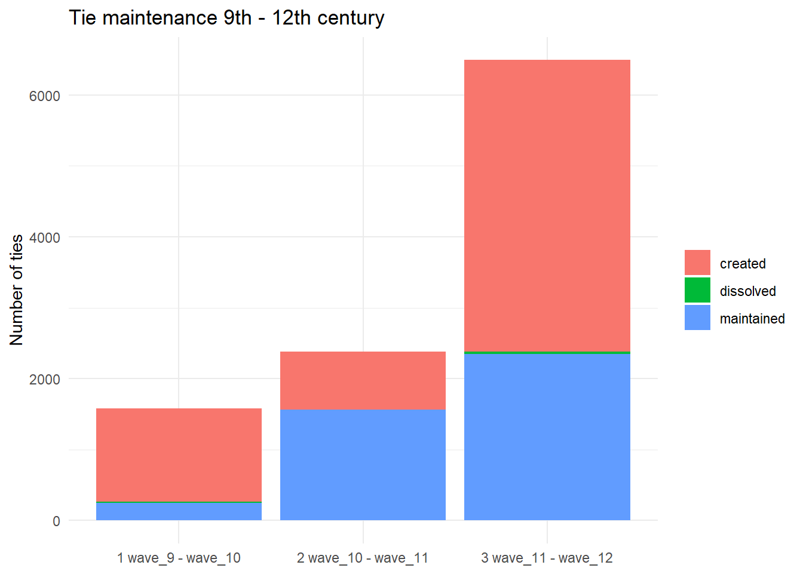

Binary observed
model
To make a unimode binary model, edges should not be regarded if they
are a product of sermons or manuscripts with a large number of sermons,
increasing the degree. For example, if I have two sermons that occur in
50% of the manuscript, they are very likely to occur together, because
they are omnipresent. We want to analyse sermons that occur together
that cannot be predicted by random change.
Therefore, a null model was created that filters edges that occur in
more than 5% of randomly shuffled manuscripts. In other words, ties with
a higher degree than 5% of 1000 random configurations.
The rules for this null model were as follows:
The unimode model is created by a null model on bipartite
manuscripts.
ms - [se1, se2, se3] ms2 - [se1, se4]
The length of the sermon sequence is perserved, only the sermons are
swapped between manuscripts. To this end, the sermons that are already
swopped with not be swapped in the opposite direction, and are not the
same. So, se1 and se1 are not swopped, and ms-se1 and ms2-se4 are
swopped back on the next swopping round. There were 1000 swopping rounds
per century.
This analysis is conducted on the 5% higher than random ties between
sermons.
The eda has shown that something changes in the clusters coefficient
of the full network of sermons between 9-12th century and 13-16th
century. Furthermore, the 9th to 12th century almost only increases new
ties where as the ties of the 12th to the 13th century change by almost
50%.
To meet the ends of learning SIENA, analysing the manuscripts that
are most used for editing purposes, and keeping a simple model, this
analysis will be conducted on 9th to 12th century manuscripts.
Earlier centuries (5th to 8th) had a maximum of 17 manuscripts and
didn’t yield any more than 5% non-random sermon ties.
## New names:
## New names:
## New names:
## New names:
## • `` -> `...1`
colls_df <- read_excel('./data/data_raw/collections.xlsx')
coll_ref_df <- read_excel('./data/data_raw/collections.xlsx', sheet="coll_cato") |>
mutate(century = as.integer(century)) |>
drop_na(century)
## New names:
## • `` -> `...5`
## Warning: There was 1 warning in `mutate()`.
## ℹ In argument: `century =
## as.integer(century)`.
## Caused by warning:
## ! NAs introduced by coercion
covar_colls_l <- lapply(colls_df, function(x) {
x <- as.character(x)
x[!is.na(x)]
})
# the alleluia sermons
allel_nodes <- se_nodes |>
filter(alleluia == 1) |>
pull(Id)
allel_nodes
## [1] "se-1" "se-107" "se-119" "se-12" "se-13" "se-14" "se-147" "se-148" "se-149" "se-15"
## [11] "se-151" "se-152" "se-153" "se-154" "se-155" "se-156" "se-166" "se-179" "se-216" "se-240"
## [21] "se-241" "se-242" "se-243" "se-25" "se-251" "se-252" "se-255" "se-260" "se-261" "se-262"
## [31] "se-278" "se-286" "se-287" "se-29" "se-298" "se-319" "se-32" "se-33" "se-34" "se-349"
## [41] "se-42" "se-48" "se-49" "se-50" "se-57" "se-73" "se-75" "se-85" "se-92" "se-94"
## [51] "se-96"
Network
visualisation
Alleluia in full
network
To get a general idea of how alleluia is distributed in the general
network. For clarity the nodes without edges are removed per plot.
# from matrix to igraph
g9 <- graph_from_adjacency_matrix(se_adj_9,
mode = "max", diag = F)
g10 <- graph_from_adjacency_matrix(se_adj_10,
mode = "max", diag = F)
g11 <- graph_from_adjacency_matrix(se_adj_11,
mode = "max", diag = F)
g12 <- graph_from_adjacency_matrix(se_adj_12,
mode = "max", diag = F)
plot_graph <- function (g, century, layout=NULL, size=200, clean=FALSE, color_nodes = list()){
# which nodes to keep, if clean remove nodes with 0
keep <- rep(TRUE, vcount(g))
if (isTRUE(clean)) keep <- degree(g) > 0
# remove unkept nodes
g <- induced_subgraph(g, which(keep))
if (is.null(layout)) layout <- layout_with_mds(g, dist = NULL, dim = 2)
V(g)$size <- size
# get allel color red
alleluia_color <- ifelse(names(V(g)) %in% allel_nodes, "red", "lightgray")
# plot century
p1 <- plot(g,
vertex.label = NA,
vertex.color = adjustcolor(alleluia_color, alpha.f = 0.8),
layout=layout,
edge.width = 3,
rescale=F,
main=paste0("n=", length(V(g)), "; century=", century)
)
p1
}
par(mfrow=c(2, 2), mar= c(1,1,1,1))
g_clean_list <- list(g9, g10, g11, g12)
cent_list <- 9:12
for (i in seq(length(g_clean_list))){
g_i <- g_clean_list[[i]]
cent <- cent_list[i]
plot_graph(g=g_i, century=cent, clean=T, size=300)
}

coll
## function (pattern, ignore_case = FALSE, locale = "en", ...)
## {
## pattern <- as_bare_character(pattern)
## check_bool(ignore_case)
## check_string(locale)
## options <- str_opts_collator(ignore_case = ignore_case, locale = locale,
## ...)
## structure(pattern, options = options, class = c("stringr_coll",
## "stringr_pattern", "character"))
## }
## <bytecode: 0x000001817846aab8>
## <environment: namespace:stringr>
Observations on
overall network
The Alleluia collection occurs together, although not in full and
seperate. In any century, with this filter, the collection clusters
seperately and mostly with other sermons outside the collection. Apart
from the 12th century, it appears that not all sermons have a degree
with this filter.
Alleluia
subcollections plots
# alleluia subcollections
allel_colls <- covar_colls_l[grepl("^alleluia_", names(covar_colls_l))]
# assign colours
coll_cols <- setNames(
rainbow(length(allel_colls)),
names(allel_colls)
)
# plot four centuries
g_list <- list(g9, g10, g11, g12)
par(mfrow = c(2, 2), mar = c(1, 1, 2, 1))
for (i in seq_along(g_list)) {
g <- induced_subgraph(g_list[[i]], V(g_list[[i]])$name %in% allel_nodes)
V(g)$color <- "lightgray"
E(g)$color <- "black"
for (c in names(allel_colls)) {
V(g)$color[V(g)$name %in% allel_colls[[c]]] <- coll_cols[c]
}
plot(g,
vertex.label = NA,
vertex.size = 15,
vertex.color = adjustcolor(V(g)$color, alpha.f = 0.8),
edge.width = 2,
layout = layout_with_mds(g),
main = paste("Century", i + 8, "- n =", vcount(g)))
}
legend("bottomright", legend = names(coll_cols),
col = coll_cols, pch = 19, bty = "n", cex = 0.7)

Define the filter of
sermons used for the analysis
The options are: - Only alleluia sermons to get the model running and
building the model - Alleluia sermons and its direct (model=1)
neighbours get test on a bigger model without overstraching the running
capacity - Use the full model.
# ================== PARAMETERS ======================
# option: "alleluia" | "sample" | "neighbours" or somthing else
SIZE_RANDOM_SAMPLE = 100
mats <- list(
se_adj_9,
se_adj_10,
se_adj_11,
se_adj_12
)
# ==================== FUNCTIONS ===================
# drop nodes with no edges
ses_lists <- lapply(mats, function(m) {
keep <- rowSums(m != 0) > 0 | colSums(m != 0) > 0
m[keep, keep, drop = T]
return (colnames(m))
})
# get the neighbours of alleluia nodes and return a list of unique neighbours
get_allel_sermons <- function(g, allel_nodes) {
# overlap of alleluia nodes with nodes in the network
non_missing_nodes <- intersect(allel_nodes, V(g)$name)
# get neighbours
nn_allel <- adjacent_vertices(g, v = non_missing_nodes, mode = "all")
# put nn in list
allel_nn_nodes <- list()
for (nn in nn_allel) {
if (!is.null(names(nn))) {
allel_nn_nodes <- append(allel_nn_nodes, as.list(names(nn)))
}
}
# unlist and make unique
unique(unlist(allel_nn_nodes))
}
# ============== TYPES OF NODE FILTERS ===============
## ALL SERMONS WITH EDGES
all_node_sermons <- unique(unlist(ses_lists))
## RANDOM SAMPLE OF N SERMONS
# a random sample of sermons (n=100)
sample_vec <- all_node_sermons |>
as.data.frame() |>
slice_sample(n=100) |>
as.list()
## ONLY ALLELUIA SERMONS
# alleluia sermons
allel_nodes <- se_nodes |>
filter(alleluia == 1) |>
pull(Id)
## ALLELUIA NEIGHBOURS MODE=1
# get set of all centuries
allel_sermons <- unique(c(
get_allel_sermons(g9, allel_nodes),
get_allel_sermons(g10, allel_nodes),
get_allel_sermons(g11, allel_nodes),
get_allel_sermons(g12, allel_nodes),
allel_nodes
))
print(paste("N only alleluia sermons:", length(allel_nodes)))
## [1] "N only alleluia sermons: 51"
print(paste("N direct neighbours Alleluia sermons:", length(allel_sermons)))
## [1] "N direct neighbours Alleluia sermons: 284"
print(paste("N random sample:", length(sample_vec$all_node_sermons)))
## [1] "N random sample: 100"
print(paste("All sermons:", length(all_node_sermons)))
## [1] "All sermons: 552"
# ===================== FILTER ==================
FILTER_TYPE <- "neighbours"
# option: "alleluia" | "sample" | "neighbours" or somthing else
# the alleluia sermons
if (FILTER_TYPE == "alleluia"){
filter_sermons <- allel_nodes
} else if (FILTER_TYPE == "sample"){
filter_sermons <- sample_vec$all_node_sermons
} else if (FILTER_TYPE == "neighbours"){
filter_sermons <- allel_sermons
} else filter_sermons <- all_node_sermons
print(paste("Filter type:", FILTER_TYPE))
## [1] "Filter type: neighbours"
# filter on relevant nodes
df <- se_nodes |>
filter(Id %in% filter_sermons)
# sermons with ties that lack a row in se_nodes
setdiff(filter_sermons, se_nodes$Id)
## character(0)
# pad a matrix to the full set of ids, filling gaps with 0
pad_matrix = function(m, ids) {
out = matrix(0, nrow = length(ids), ncol = length(ids),
dimnames = list(ids, ids))
shared = intersect(ids, rownames(m))
out[shared, shared] = m[shared, shared]
out[is.na(out)] = 0
diag(out) = 0
out
}
mats_sync = lapply(mats, pad_matrix, ids = df$Id)
# make matrix waves
wave_9 <- mats_sync[[1]]
wave_10 <- mats_sync[[2]]
wave_11 <- mats_sync[[3]]
wave_12 <- mats_sync[[4]]
# uniform the waves with the node attibutions
wave_9 <- wave_9[df$Id, df$Id, drop = FALSE]
wave_10 <- wave_10[df$Id, df$Id, drop = FALSE]
wave_11 <- wave_11[df$Id, df$Id, drop = FALSE]
wave_12 <- wave_12[df$Id, df$Id, drop = FALSE]
# print identical nodes to next wave
identical(rownames(wave_9), rownames(wave_10))
## [1] TRUE
identical(rownames(wave_10), rownames(wave_11))
## [1] TRUE
identical(rownames(wave_11), rownames(wave_12))
## [1] TRUE
isSymmetric(wave_12)
## [1] TRUE
g9_sync <- graph_from_adjacency_matrix(wave_9, mode = "max", diag = F)
g10_sync <- graph_from_adjacency_matrix(wave_10, mode = "max", diag = F)
g11_sync <- graph_from_adjacency_matrix(wave_11, mode = "max", diag = F)
g12_sync <- graph_from_adjacency_matrix(wave_12, mode = "max", diag = F)
g_full <- list(g9_sync, g10_sync, g11_sync, g12_sync)
centuries <- seq(9, 12)
par(mfrow=c(2, 2), mar= c(1,1,1,1))
stable_layout <- layout_with_mds(g12_sync, dist = NULL, dim = 2)
for (i in seq(length(g_clean_list))){
g_i <- g_full[[i]]
cent <- cent_list[i]
size <- ifelse(cent %in% 11:12, 400, 300)
plot_graph(g_i, century=cent, layout = NULL, size=size, clean=T)
}
mtext("Filtered network", side = 3, line = 0, outer = TRUE)

alleluia_counts <- sapply(g_full, function(g) {
e <- ends(g, E(g), names = TRUE)
a <- e[, 1] %in% allel_nodes
b <- e[, 2] %in% allel_nodes
c(
"A–A" = sum(a & b),
"A–NonA" = sum(a != b),
"NonA–NonA" = sum(!a & !b)
)
})
colnames(alleluia_counts) <- 9:12
alleluia_counts <- as.data.frame(alleluia_counts)
alleluia_counts <- data.frame(type = rownames(alleluia_counts), alleluia_counts,row.names = NULL)
counts_long <- alleluia_counts |>
pivot_longer(-type, names_to = "century", values_to = "count") |>
mutate(century = factor(century,levels = c("X9", "X10", "X11", "X12")))
ggplot(counts_long, aes(x = century, y = count, fill = type)) +
geom_col(position = "fill") +
labs(x = "Century", y = "Number of edges (%)", fill = "Edge type",
title = "Edge distribution Alleluia with non-Alleluia sermons",
subtitle = "Sliced network on Alleluia sermons with neighbours") +
theme_minimal()

# get n nodes (removed if degree = 0)
century_count <- function (g_i, cent) {
n_unq_mss = length(unique(E(g_i)$manuscript))
# voeg een weight toe
E(g_i)$weight = 1
g_i <- simplify(g_i, edge.attr.comb = list(weight = "sum"))
# normalise weight
E(g_i)$weight <- E(g_i)$weight / max(E(g_i)$weight)
avg_edges <- if(n_unq_mss > 0) ecount(g_i) / n_unq_mss else 0
return(data.frame(
Century = cent,
Nodes = vcount(g_i),
Edges = ecount(g_i),
Degree = igraph::mean_degree(g_i),
Transitivity = igraph::transitivity(g_i, type = "global"),
Density = igraph::edge_density(g_i),
stringsAsFactors = FALSE
))
}
df_results <- do.call(rbind, lapply(seq_along(g_full), function(i) {
century_count(g_i = g_full[[i]], cent = centuries[i])
}))
knitr::kable(df_results)
| 9 |
284 |
262 |
1.84 |
0.733 |
0.007 |
| 10 |
284 |
1563 |
11.01 |
0.946 |
0.039 |
| 11 |
284 |
2377 |
16.74 |
0.913 |
0.059 |
| 12 |
284 |
6463 |
45.51 |
0.875 |
0.161 |
EDA
comparative
When comparing the EDA of the weighted full network with the
not-random network, a few things stick out on the three measurements:
Degree, Transitivity, and Density. Degree, the number of degrees is far
lower, which totally is expected when removing 95% of the edges that
could also be attributed to random selection. Transitivity, the global
transitivity or clustering coeffient is higher in the 10 and 11th
century compared to the full graph. Furthermore, the decline we see in
clustering in the full model is not translated into the non-random
model. The 10th century shows three distinct clusters with a few
isolated triplets and doubles, which result in a high potential for
fully connected triplets. Density, the density is far lower than the
fully connected model. This is to be expected for the same reason as
lower degree.
Maintenance
The question is if the number of connects remain the same ones
formed. First have a look to what extent this happens.
waves = list(wave_9 = wave_9, wave_10 = wave_10, wave_11 = wave_11, wave_12 = wave_12)
changes <- do.call(rbind, lapply(1:3, function(i){
a = waves[[i]]
b = waves[[i+1]]
tri <- upper.tri(a)
data.frame(
period = paste(i, names(waves)[i], "-", names(waves)[i + 1]),
created = sum(a[tri] == 0 & b[tri] == 1),
dissolved = sum(a[tri] == 1 & b[tri] == 0),
maintained = sum(a[tri] == 1 & b[tri] == 1)
)
}))
print(changes)
## period created dissolved maintained
## 1 1 wave_9 - wave_10 1317 16 246
## 2 2 wave_10 - wave_11 815 1 1562
## 3 3 wave_11 - wave_12 4118 32 2345
changes_long <- pivot_longer(changes, cols = c(maintained, created, dissolved),
names_to = "change", values_to = "ties")
ggplot(changes_long, aes(x = period, y = ties, fill = change)) +
geom_col() +
labs(x = NULL, y = "Number of ties", fill = NULL,
title = "Tie maintenance 9th - 12th century") +
theme_minimal()

Which collection
could influence the alleluia corpus?
Other collections might be influencing the results of alleluia sermon
connecting. Those, we need a list of sermons-sermon edges that occur in
alleluia in the data, and not theoretical as shown above, and if those
edges also occur in another collection.
get_coll_overlap <- function (m, colls, relv_cs) {
g_a <- graph_from_adjacency_matrix(m, mode='undirected', diag = F)
coll_list <- list()
edges <- igraph::as_edgelist(g_a, names = TRUE)
print(paste(len(edges), len(E(g_a))))
overlap_counts <- integer(0)
for (c in names(colls)) {
if (c %in% relv_cs){
count <- 0
for (i in seq_len(nrow(edges))) {
e1 <- edges[i, 1]
e2 <- edges[i, 2]
if (e1 %in% colls[[c]] && e2 %in% colls[[c]]) {
count <- count + 1
}
}
if (count > 0) overlap_counts[c] <- count
}
}
overlap_counts <- sort(overlap_counts, decreasing = TRUE)
print(overlap_counts)
print(paste(nrow(edges), "total edges"))
return (names(overlap_counts))
}
get_relv_coll_cent <- function (df, cent) df |>
filter(century < cent + 1,
!str_detect(collection, "^(alleluia|brux|lapsu|scp_verbraken)")) |>
pull(collection)
mats_full_allel = lapply(mats, pad_matrix, ids = allel_nodes)
cent_list = 9:12
overlap_l <- list()
for (i in seq_len(len(mats_full_allel))) {
c = cent_list[i]
m = mats_full_allel[[i]]
# get potential/existing collections in that century
relv_cent_colls <- get_relv_coll_cent(coll_ref_df, c)
# get collection names with overlapping sermon pairs
coll_names_overlap <- get_coll_overlap(m, covar_colls_l, relv_cent_colls)
overlap_l[[c]] <- coll_names_overlap
}
## [1] "22 11"
## campanienne sessorienne vda va_a va_b quinquaginta gallicana
## 6 6 6 6 6 3 2
## wolfenbuettel marmoutier
## 2 1
## [1] "11 total edges"
## [1] "8 4"
## quinquaginta campanienne sessorienne vda va_a va_b
## 3 1 1 1 1 1
## [1] "4 total edges"
## [1] "30 15"
## campanienne camp_napels sessorienne vda va_a va_b gallicana
## 6 6 6 6 6 6 5
## quinquaginta wolfenbuettel diversis marmoutier
## 3 3 1 1
## [1] "15 total edges"
## [1] "302 151"
## scp diversis wolfenbuettel gallicana campanienne camp_napels sessorienne
## 27 16 16 15 6 6 6
## vda va_a va_b quinquaginta colbertine erfurt marmoutier
## 6 6 6 3 2 1 1
## [1] "151 total edges"
overlap_l
## [[1]]
## NULL
##
## [[2]]
## NULL
##
## [[3]]
## NULL
##
## [[4]]
## NULL
##
## [[5]]
## NULL
##
## [[6]]
## NULL
##
## [[7]]
## NULL
##
## [[8]]
## NULL
##
## [[9]]
## [1] "campanienne" "sessorienne" "vda" "va_a" "va_b" "quinquaginta"
## [7] "gallicana" "wolfenbuettel" "marmoutier"
##
## [[10]]
## [1] "quinquaginta" "campanienne" "sessorienne" "vda" "va_a" "va_b"
##
## [[11]]
## [1] "campanienne" "camp_napels" "sessorienne" "vda" "va_a" "va_b"
## [7] "gallicana" "quinquaginta" "wolfenbuettel" "diversis" "marmoutier"
##
## [[12]]
## [1] "scp" "diversis" "wolfenbuettel" "gallicana" "campanienne" "camp_napels"
## [7] "sessorienne" "vda" "va_a" "va_b" "quinquaginta" "colbertine"
## [13] "erfurt" "marmoutier"
RSiena
One big discussing point here. The network shows almost no breaking
of ties between the waves. The model is breaking, maintaining, or
addition ties to form the observed network, stepwise. However, the
observed model doesn’t work that way, because it is a projected single
model network from a bipartite network, the edges are form
simultaneously, resulting in high clustering networks that behave per
definition differently. Consequently, the model has a hard time
converging and approximating the observed network with it runs.
Therefore, I would argue it is justified to simplify the model to a only
adding model although this is non-comform theory were sermons could be
disentangled in the scribe’s eye. The margional error will be small to
produce a model that is better at simulating the observed networks than
without.
Furthermore, the model yields NA’s on testing the subcollection in
the std’s. Probablity because the model doesn’t converge. Therefore, the
research question is formulated more abstractly, to investiguate whether
or not the subcollections in general are more influential in forming
connections than Alleluia. To differentiate between the two, the model
will test on tie dummies instead of node dummies. Because indivial nodes
of subcollections dont converge, because making all subcollection one
dummy of subcollection yields exactly the same as the alleluia dummy
because the nodes are the same. Theoratically, the subcollection
property lays within the sermon, not in the tie. A scribe would select
two sermons and not a manuscript with the two sermons (is the
hypothesis). However, this simplification reduces the model’s
dimensionality and retains the difference between alleluia collection
and subcollections.
net_soc_array <- array(data = c(wave_9, wave_10, wave_11, wave_12), dim = c(dim(wave_9), 4))
# change maximum of both matrices (only increasing)
for (t in 2:dim(net_soc_array)[3]) {
net_soc_array[, , t] <- pmax(net_soc_array[, , t], net_soc_array[, , t - 1])
}
# dependent
net <- sienaDependent(net_soc_array, type = "oneMode",
allowOnly = TRUE)
net
## Type oneMode
## Observations 4
## Nodeset Actors (284 elements)
# align
ids <- rownames(wave_9)
# slice on ids
sim <- theme_sim_m[ids, ids]
# sim z-score
sim <- (sim - mean(sim[upper.tri(sim)])) /
sd(sim[upper.tri(sim)])
diag(sim) <- 0
# z-score
sim <- (sim - mean(sim[upper.tri(sim)])) /
sd(sim[upper.tri(sim)])
diag(sim) <- 0
mean(sim)
## [1] -1.39e-17
df <- se_nodes |>
filter(Id %in% rownames(wave_9))
# return present in collection [0,1]
in_collection <- function (col){
x <- df[[col]] == 1
x[is.na(x)] <- F
as.numeric(x)
}
# add coCovar for each collection on node level
node_dummy <- function(cols) {
x <- rep(0, nrow(df))
for (col in cols) x[in_collection(col) == 1] <- 1
coCovar(x)
}
# return matrix of shared edges of collections
pair_share <- function(cols) {
n <- nrow(df)
m <- matrix(0, n, n)
for (col in cols) {
members <- in_collection(col) == 1
m[members, members] <- 1
}
diag(m) <- 0
m
}
# add coVar on dyad level for every wave
pair_share_periods <- function(cols_p1, cols_p2, cols_p3) {
n <- nrow(df)
empty <- matrix(0, n, n)
m1 <- if (length(cols_p1) == 0) empty else pair_share(cols_p1)
m2 <- if (length(cols_p2) == 0) empty else pair_share(cols_p2)
m3 <- if (length(cols_p3) == 0) empty else pair_share(cols_p3)
varDyadCovar(array(c(m1, m2, m3), dim = c(n, n, 3)))
}
# ===========================================================
a_sub_cols <- c("alleluia_spring", "alleluia_easter", "alleluia_after_425", "alleluia_mixed?") # mixed is covered by mixed?
controle_cols <- c("campanienne", "sessorienne", "va_a", "va_b") # > 6 overlap from 9th onwards
desc_cols <- c("lapsu", "bruxelles")
later_cols <- c("scp", "diversis", "wolfenbuettel") # > 15 overlap on 12th century
mydata <- sienaDataCreate(
net = net,
alleluia = node_dummy("alleluia"),
same_Asubs = coDyadCovar(pair_share(a_sub_cols)),
c912cols = coDyadCovar(pair_share(controle_cols)),
desc = pair_share_periods(c(), desc_cols, desc_cols),
c12cols = pair_share_periods(c(), c(), later_cols),
theme = coDyadCovar(sim)
)
## For dependent variable net, in some periods,
## there are only increases, or only decreases.
## This will be respected in the simulations.
## If this is not desired,
## use allowOnly=FALSE when creating the dependent variable.
print01Report(mydata, modelname = "./results/Alle7")
attr(mydata$depvars$net, "uponly")
## [1] TRUE TRUE TRUE
# get new project
myAlg <- sienaAlgorithmCreate(projname = "./results/Alle7_model1")
## If you use this algorithm object, siena07 will create/use an output file ./results/Alle7_model1.txt .
n_cores <- detectCores() - 1
# run model with time on density
est_model <- function(eff, prev = NULL, thetaBound = 150) {
siena07(myAlg, data = mydata, effects = eff,
returnDeps = TRUE, useCluster = TRUE, nbrNodes = n_cores,
thetaBound = thetaBound, prevAns = prev)
}
# limit degree validation by only looking at 0 to 25 degrees
DegreeDist0to100 <- function(i, obsData, sims, period, groupName, varName, ...) {
IndegreeDistribution(i, obsData, sims, period, groupName, varName, levls = seq(0, 25, by = 1))
}
# get undirected triad census
TriadUndir <- function(i, obsData, sims, period, groupName, varName, ...) {
a <- as.matrix(sparseMatrixExtraction(i, obsData, sims, period, groupName, varName))
g <- graph_from_adjacency_matrix(a)
tc <- triad_census(g)
c("003"=tc[1], "102"=tc[3], "201"=tc[11], "300"=tc[16])
}
gof_triads <- function(ans) {
sienaGOF(ans, TriadUndir, verbose = TRUE, join = FALSE,
varName = "net", period = 1:3, twoTailed = FALSE)
}
gof_degree <- function(ans) {
sienaGOF(ans, DegreeDist0to100, verbose = TRUE, join = FALSE,
varName = "net", period = 1:3, twoTailed = FALSE)
}
eff0 <- getEffects(mydata)
eff0 <- includeEffects(eff0, transTies, timeDummy = "all")
## effectNumber effectName shortName include fix test initialValue parm
## 1 11 transitive ties transTies TRUE FALSE FALSE 0 0
# (ans0 <- est_model(eff0, thetaBound = 150))
#
# gof0.degree <- gof_degree(ans0)
# gof0.triads <- gof_triads(ans0)
#
# for (p in 1:3) print(plot(gof0.degree, scale = TRUE, center = TRUE, period = p))
#
# for (p in 1:3) print(plot(gof0.triads, scale = TRUE, center = T, period = p))
#
# gof0.degree
# gof0.triads
Model 0
Results
Estimates and standard errors
Rate parameters: 0.1 Rate parameter period 1 4.6450 ( 0.1293) 0.2
Rate parameter period 2 2.8127 ( 0.1011) 0.3 Rate parameter period 3
14.4898 ( 0.2281)
Other parameters: 1. eval: transitive ties 5.8116 ( 0.6356)
Model 0
conclusion
The zero model is the simplest model possible. To indicate whether
the clustering prediction holds. Three times p<0.001 difference is
worrying because the model is so simple. Furthermore, the MDH = ~[4300,
87000] which is enormous.
# RQ1: Is Alleluia sermons more likely to connect with Alleluia sermons or rather with other sermons?
eff1 <- includeEffects(eff0, egoPlusAltX, egoXaltX, interaction1 = "alleluia")
## effectNumber effectName shortName include fix test initialValue parm
## 1 281 alleluia ego and alt egoPlusAltX TRUE FALSE FALSE 0 0
## 2 403 alleluia ego x alleluia alter egoXaltX TRUE FALSE FALSE 0 0
# RQ2: Are subcollections of Alleluia more prominent to connect with each other rather than Alleluia sermons.
eff1 <- includeEffects(eff1, X, interaction1 = "same_Asubs")
## effectNumber effectName shortName include fix test initialValue parm
## 1 94 same_Asubs X TRUE FALSE FALSE 0 0
# controle collections
for (covar in c("c912cols", "desc", "c12cols")) eff1 <- includeEffects(eff1, X, interaction1 = covar)
## effectNumber effectName shortName include fix test initialValue parm
## 1 127 c912cols X TRUE FALSE FALSE 0 0
## effectNumber effectName shortName include fix test initialValue parm
## 1 193 desc X TRUE FALSE FALSE 0 0
## effectNumber effectName shortName include fix test initialValue parm
## 1 226 c12cols X TRUE FALSE FALSE 0 0
# theme added
eff1 <- includeEffects(eff1, X, interaction1 = "theme")
## effectNumber effectName shortName include fix test initialValue parm
## 1 160 theme X TRUE FALSE FALSE 0 0
eff1
## effectName include fix test initialValue parm
## 1 constant net rate (period 1) TRUE FALSE FALSE 18.6 0
## 2 constant net rate (period 2) TRUE FALSE FALSE 11.3 0
## 3 constant net rate (period 3) TRUE FALSE FALSE 58.2 0
## 4 transitive ties TRUE FALSE FALSE 0.0 0
## 5 same_Asubs TRUE FALSE FALSE 0.0 0
## 6 c912cols TRUE FALSE FALSE 0.0 0
## 7 theme TRUE FALSE FALSE 0.0 0
## 8 desc TRUE FALSE FALSE 0.0 0
## 9 c12cols TRUE FALSE FALSE 0.0 0
## 10 alleluia ego and alt TRUE FALSE FALSE 0.0 0
## 11 alleluia ego x alleluia alter TRUE FALSE FALSE 0.0 0
# (ans1 <- est_model(eff1, thetaBound = 150))
#
# gof1.degree <- gof_degree(ans1)
# gof1.triads <- gof_triads(ans1)
#
# for (p in 1:3) print(plot(gof1.degree, scale = TRUE, center = TRUE, period = p))
#
# for (p in 1:3) print(plot(gof1.triads, scale = TRUE, center = T, period = p))
#
# gof1.degree
# gof1.triads
Model 1
results
Estimates and standard errors
Rate parameters: 0.1 Rate parameter period 1 8.5024 ( 0.3183) 0.2
Rate parameter period 2 5.0790 ( 0.2219) 0.3 Rate parameter period 3
15.8178 ( 0.2844)
Other parameters: 1. eval: transitive ties 9.5085 ( 4.7104) 2. eval:
same_Asubs -0.0454 ( 0.3332) 3. eval: c912cols 2.5980 ( 0.1827) 4. eval:
theme 0.2218 ( 0.0309) 5. eval: desc 2.5509 ( 0.2589) 6. eval: c12cols
125.1061 ( 5.9065) 7. eval: alleluia ego and alt -0.9040 ( 0.1329) 8.
eval: alleluia ego x alleluia alter 1.7311 ( 0.2641)
Overall maximum convergence ratio = 2.9329 .
The model doesn’t converge at all, (2.93) and that has to do with the
collections in the 12th century. They overlap strongly with the existing
model, and predict thus too well. The leap from wave 11 to 12 increases
a lot of ties, so the model needs to work hard towards adding new ties
and because the big collections like SCP were very popular it fits very
well.
Therefore, this parameter will be fixed.
eff2 <- setEffect(eff1, X, interaction1 = "c12cols", fix = TRUE, initialValue = 10)
## effectNumber effectName shortName include fix test initialValue parm
## 1 226 c12cols X TRUE TRUE FALSE 10 0
eff2 <- setEffect(eff2, transTies, initialValue = 5.8, fix = FALSE)
## effectNumber effectName shortName include fix test initialValue parm
## 1 11 transitive ties transTies TRUE FALSE FALSE 5.8 0
# (ans2 <- est_model(eff2, thetaBound = 150, prev = ans1))
#
# ans2
#
# gof2.degree <- gof_degree(ans2)
# gof2.triads <- gof_triads(ans2)
#
# for (p in 1:3) print(plot(gof2.degree, scale = TRUE, center = TRUE, period = p))
#
# for (p in 1:3) print(plot(gof2.triads, scale = TRUE, center = T, period = p))
#
# gof2.degree
# gof2.triads
Model 1.2
Model 1.2
Results
Initial parameter values are 0.1 Rate parameter 8.5024 0.2 Rate
parameter 5.0790 0.3 Rate parameter 15.8178 1. eval: transitive ties
9.5085 2. eval: same_Asubs -0.0454 3. eval: c912cols 2.5980 4. eval:
theme 0.2218 5. eval: desc 2.5509 6. eval: c12cols 125.1061 (fixed) 7.
eval: alleluia ego and alt -0.9040 8. eval: alleluia ego x alleluia
alter 1.7311
Overall maximum convergence ratio = 0.1135
Model 1.2
conclusions
The three research questions are combined into one model. It needs to
be said that the goodness of fit is rather terrible and no conclusion
can be drawn from this analysis. The model does converge on (0.11).
However, would that be the cause, this would be my
interpretation.
RQ1: Something that I didn’t expect, but Alleluia shows a positive
effect of connecting with sermons from alleluia (z=7.33) and a negative
effect of forming edge with sermons outside collection (z = -8.55).
RQ2: The subcollections are not more likely to be form a tie compared
to between subcollections or other sermons (z = 0.30). The thematic
overlap between the addition in Mixed? and the thematic overlap
exhibited in that subcollection, may have influenced the low result of
this analysis.
RQ3: Thematic similarity is an significant (z = 9.99) factor to form
ties in the next phase.
Potential
problems:
- the transitive ties are frozen in the second run.
- the goodness of fit is significantly different, changing per wave
the number of triads and singles, and the degree is seriously off. I
think it is difficult for the model to stocastically work on a
“edge-adding” model when it is estimated in projected network.
- The assumption of causality is probablity wrong. The model implices
wave2 is caused by wave1 + ties, but on a microlevel this assumption
doesn’t hold, because the ties are created by non-random estimation of
the sum of different ties. One tie reflects the relationship between
ties of the network as well as a summation of multiple manuscripts that
could be written in an unrelated context. For example: baltics 1010
monestary and secular scriptorium against the Notre dame in 1090.
- Put differently, the sermons are not necessary aware of the
existence of other sermons (some sermons are out of scope from the
datasets we have, and may be less copied)
Thoughts of next
steps
One of the strongest ideas is the estimation of effects to predict
next distributions. SIENA does this really well. The translations
however from macro to micro and back is difficult due to the nature of
the source material.
I’ve learned that a model should resemble the data as close as
possible, and I’m also very grateful for Koolman’s boat, which is a
strong methodological tool.
Bipartite networks will be looking in second as well as stocastic
block models.
